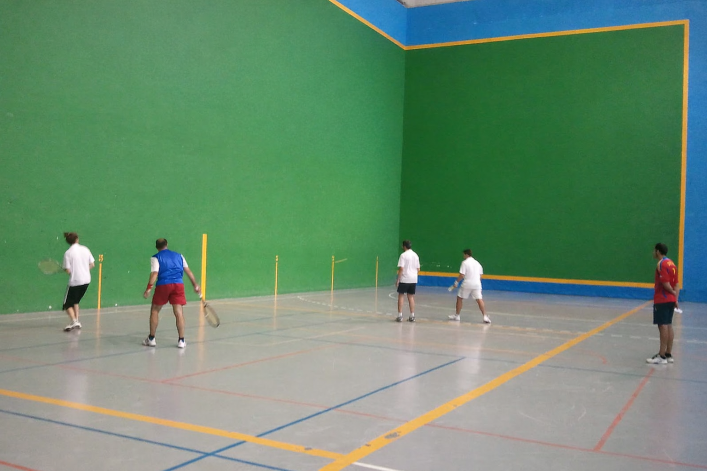
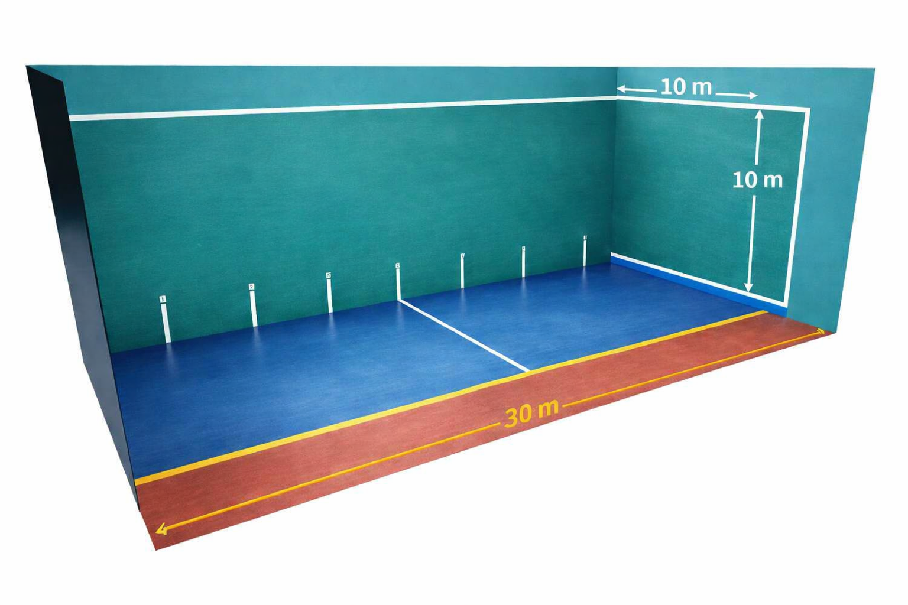

Reglas del Fronton

Aqui describiremos las reglas del deporte del fronton
Pista

El frontenis se juega en una cancha llamada frontón
Partes principales del frontón
- Frontis: Es la pared frontal contra la que debe impactar la pelota en cada golpe.
- Pared lateral: Permite crear rebotes que dificultan la devolución del rival.
- Rebote o pared trasera: En algunos frontones se utiliza para mantener el juego cuando la pelota llega al fondo.
- Cancha: Es el espacio donde se mueven los jugadores y donde puede botar la pelota.
El la pared frontal (frontis) habra una linea horizontal de X cm de altura
En la pared lateral y en el suelo se marcaran lineas para segmentar la pista. La mas importante es la F y P
El fronton es un deporte que se puedo jugar en parejas 2 vs 2, o indivudual 1 vs 1. La modalidad de parejas es la mas extendida y se suelen jugar repartiendose
el campo, uno en la zona de delante y otro en la de atras
Equipamiento:
- Raqueta
- Pelota Fronton
- Gafas Protectoras
-
- Opcional
- - muñequera
- - rodillera
- - gorra
Reglas:
- El saque:
- El jugador que saca debe golpear la pelota de manera que:
- - bote primero en el suelo
- - golpee el frontis
- - entre dentro de la zona válida del campo. Entre las lines F y P
- Si el saque no cumple estas condiciones, se considera falta
- Desarrollo del punto:
- Una vez realizado el saque, comienza el intercambio de golpes
- - la pelota debe golpear primero el frontis
- - puede rebotar en la pared lateral
- - el rival debe devolverla antes de que bote dos veces.
- El intercambio continúa hasta que uno de los jugadores comete un error.
- Cuándo se gana un punto
- Un punto se consigue cuando el rival:
- - no logra devolver la pelota
- - envía la pelota fuera del campo
- - golpea incorrectamente sin que toque el frontis
- - deja que la pelota bote dos veces.
- Dependiendo del formato del partido, los puntos se acumulan hasta alcanzar la puntuación necesaria para ganar el juego